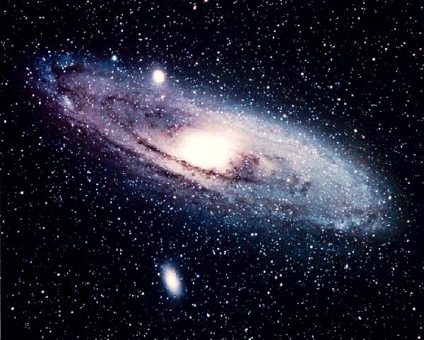
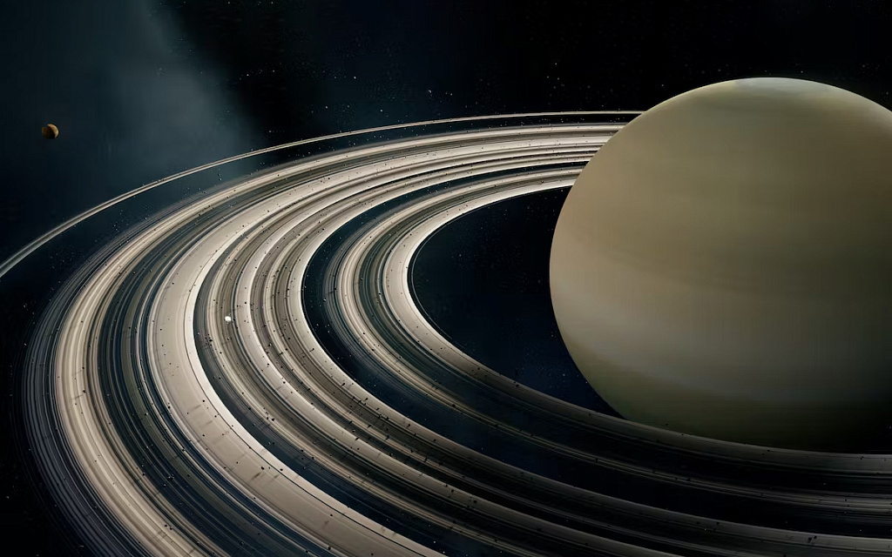

🚀 Путешествие по космосу
Космос огромный и загадочный. Здесь — короткие факты о планетах, Луне и звёздах.
Планеты
Луна
Звёзды
Ссылки
🪐 Планеты Солнечной системы
В Солнечной системе 8 планет. Они вращаются вокруг Солнца.
Самая близкая планета — Меркурий, а самая дальняя — Нептун.
⭐ Звёзды
Звёзды — это огромные горячие шары газа.
Солнце — тоже звезда, просто она ближе всего к Земле.
Изображение космоса

Сатурн
Сатурн — это шестая от Солнца и вторая по размеру планета Солнечной системы, представляющая собой газовый гигант с заметной системой колец. Основные характеристики
Тип: газовый гигант.
Состав: в основном водород и гелий с примесью метана, аммиака и воды.
Кольца: состоят из миллиардов частиц льда и камня.
Спутники: имеет множество спутников, крупнейший из которых — Титан.
Изображение Сатурна
